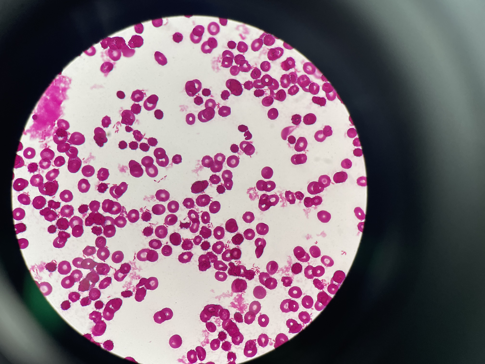
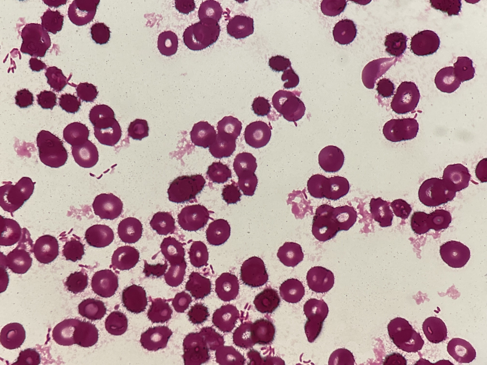

グラム染色 像 撮影：ICU関谷


分類・特徴
- グラム染色
- 陰性桿菌
- 糖代謝
- 非発酵
- 生息
- 地面・水中（環境菌）
- 耐性機序
- ① Multi-drug efflux pump
② OXA-134 β-ラクタマーゼ（ESBL／AmpC 過剰産生）
出典：Open Evidence で更新予定
主な感染症
- 髄膜炎
- カテーテル関連菌血症（CRBSI）
- 尿路感染症
- 肺炎
- Cystic Fibrosis 患者での検出
出典：Open Evidence で更新予定